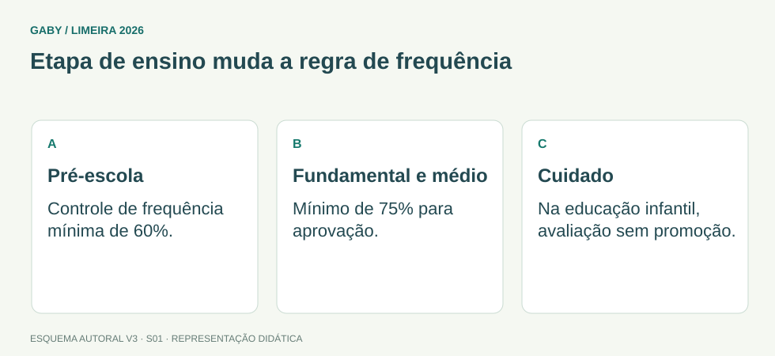

Objetivos do módulo
- Compreender a estrutura da LDB e seus princípios centrais.
- Relacionar dever do Estado, organização da educação e incumbências escolares.
- Dominar regras de educação básica, frequência, avaliação e documentação relevantes à secretaria.
- Reconhecer alterações atuais do texto legal e evitar estudar versões antigas.
- Citar e explicar os princípios do art. 3º (incisos I a XV) e as garantias do art. 4º, inclusive as acrescentadas em 2024 e 2025.
- Distinguir as incumbências da União, dos Estados e dos Municípios (art. 11, V, na redação de 2026), da escola e dos docentes.
- Aplicar as regras do art. 24 (200 dias, classificação, progressão parcial, avaliação, recuperação, frequência e documentos) e do art. 31 (educação infantil).
- Reconhecer a natureza e a composição do Conselho Escolar e do Fórum dos Conselhos Escolares (art. 14).
- Identificar as regras de currículo, ensino fundamental, EJA, educação especial e valorização dos profissionais da educação.
Etapa de ensino muda a regra de frequência

Descrição em texto do esquema
- Pré-escola: Controle de frequência mínima de 60%.
- Fundamental e médio: Mínimo de 75% para aprovação.
- Cuidado: Na educação infantil, avaliação sem promoção.
Oficina visual · aplique o esquema
Uma questão usa a frequência mínima de 75% como regra para aprovação na pré-escola. Qual é o erro?
Atividade autoral complementar da V3. Registre sua resposta; a resolução está no arquivo de gabarito e revisão.
Mapa do conteúdo
- 1. Como estudar a LDB para a prova
- 2. Educação, princípios e dever de educar
- 3. Organização dos sistemas e responsabilidades
- 4. Educação básica, calendário, avaliação e frequência
- 5. Secretaria escolar e rastreabilidade
- 6. Escola, docentes e gestão democrática (arts. 12 a 15)
- 7. Currículo e etapas: educação infantil, ensino fundamental e EJA (arts. 26 a 38)
- 8. Educação especial e profissionais da educação (arts. 58 a 67)
1. Como estudar a LDB para a prova
A Lei nº 9.394/1996 estabelece as diretrizes e bases da educação nacional. Para Secretário de Escola, não basta decorar números de artigos: é preciso entender como a lei organiza a educação, distribui responsabilidades e estabelece regras que aparecem diretamente na rotina escolar.
A prova pode trocar sujeitos, idades, competências ou transformar uma faculdade em obrigação. Por isso, preste atenção a expressões como deverá, poderá, preferencialmente, obrigatória e gratuita.
2. Educação, princípios e dever de educar
A LDB define a educação como fenômeno amplo e disciplina especificamente a educação escolar. A educação escolar deve se vincular ao mundo do trabalho e à prática social.
A quem a LDB se aplica: é lei federal de alcance nacional. Vale para todos os sistemas de ensino (federal, estaduais, distrital e municipais), para escolas públicas e privadas e, portanto, para a rede municipal de Limeira. Nesta aula, “LDB” é a Lei nº 9.394/1996 na redação vigente do texto compilado do Planalto.
Educação e educação escolar (art. 1º)
O art. 1º, caput, dá o conceito amplo: a educação abrange os processos formativos que se desenvolvem na vida familiar, na convivência humana, no trabalho, nas instituições de ensino e pesquisa, nos movimentos sociais e organizações da sociedade civil e nas manifestações culturais. A pessoa também se educa fora da escola.
O § 1º recorta o objeto da lei: a LDB disciplina a educação escolar, que se desenvolve predominantemente por meio do ensino, em instituições próprias. O § 2º liga essa educação escolar à vida real:
Finalidades da educação (art. 2º)
O art. 2º afirma que a educação é dever da família e do Estado, inspirada nos princípios de liberdade e nos ideais de solidariedade humana. Tem três finalidades, que andam juntas: o pleno desenvolvimento do educando, seu preparo para o exercício da cidadania e sua qualificação para o trabalho. Uma afirmação que reduz a educação a uma só delas (por exemplo, “treinar para uma profissão”) contraria o artigo.
Princípios do ensino (art. 3º)
Entre os princípios do ensino estão igualdade de condições de acesso e permanência, liberdade de aprender e ensinar, pluralismo de ideias e concepções pedagógicas, respeito à liberdade e apreço à tolerância, gratuidade do ensino público em estabelecimentos oficiais, valorização dos profissionais da educação, gestão democrática do ensino público, garantia de padrão de qualidade e aprendizagem ao longo da vida.
O art. 3º tem hoje 15 incisos. Os últimos foram acrescentados por leis recentes e costumam ser cobrados.
| Inciso do art. 3º | Princípio | Observação de prova |
|---|---|---|
| I | Igualdade de condições para o acesso e permanência na escola. | Não basta matricular: a permanência também é princípio. |
| II | Liberdade de aprender, ensinar, pesquisar e divulgar a cultura, o pensamento, a arte e o saber. | |
| III | Pluralismo de ideias e de concepções pedagógicas. | Não há método pedagógico único imposto por lei. |
| IV | Respeito à liberdade e apreço à tolerância. | |
| V | Coexistência de instituições públicas e privadas de ensino. | A LDB reconhece as duas. A escola privada funciona nas condições do art. 7º (abaixo). |
| VI | Gratuidade do ensino público em estabelecimentos oficiais. | Gratuidade é do ensino público, não do privado. |
| VII | Valorização do profissional da educação escolar. | Detalhada no art. 67 (seção 8). |
| VIII | Gestão democrática do ensino público, na forma da LDB e da legislação dos Estados, do Distrito Federal e dos Municípios (redação da Lei 14.644/2023). | Detalhada no art. 14 (seção 6). |
| IX | Garantia de padrão de qualidade. | |
| X | Valorização da experiência extraescolar (no texto da lei, grafada “extra-escolar”). | O que o aluno aprende fora da escola conta, mas não vira diploma sozinho: saberes adquiridos por meios informais são reconhecidos mediante exames (art. 38, § 2º). |
| XI | Vinculação entre a educação escolar, o trabalho e as práticas sociais. | Repete a ideia do art. 1º, § 2º. |
| XII | Consideração com a diversidade étnico-racial (Lei 12.796/2013). | |
| XIII | Garantia do direito à educação e à aprendizagem ao longo da vida (Lei 13.632/2018). | Educação não é direito só da infância; liga-se à EJA (art. 37). |
| XIV | Respeito à diversidade humana, linguística, cultural e identitária das pessoas surdas, surdo-cegas e com deficiência auditiva (Lei 14.191/2021). | Liga-se à educação bilíngue de surdos (art. 60-A). |
| XV | Garantia do direito de acesso a informações públicas sobre a gestão da educação (incluído pela Lei 15.001, de 16/10/2024). | Transparência não autoriza expor dados pessoais de alunos: a própria LDB manda tratar microdados de forma anonimizada sempre que possível (art. 5º, § 8º) e, ao divulgar o currículo de dirigentes, observar a LGPD (art. 14-A, VI). |
Dever do Estado com a educação escolar pública (art. 4º)
O dever do Estado inclui a garantia da educação básica obrigatória e gratuita dos 4 aos 17 anos. A matrícula das crianças na educação básica é dever dos pais ou responsáveis a partir dos 4 anos.
O art. 4º lista as garantias pelas quais esse dever se cumpre. Leia com atenção o inciso I: a faixa obrigatória é dos 4 aos 17 anos e está organizada em três etapas. A creche é direito (inciso II), mas não está nessa faixa obrigatória.
| Inciso do art. 4º | O que o Estado garante | Como cai |
|---|---|---|
| I (alíneas a, b e c) | Educação básica obrigatória e gratuita dos 4 (quatro) aos 17 (dezessete) anos, organizada em: a) pré-escola; b) ensino fundamental; c) ensino médio. | Trocam pré-escola por creche, ou incluem educação superior. |
| II | Educação infantil gratuita às crianças de até 5 anos. | Aqui entram creche (até 3 anos) e pré-escola (4 e 5 anos). |
| III | Atendimento educacional especializado gratuito aos educandos com deficiência, transtornos globais do desenvolvimento e altas habilidades ou superdotação, transversal a todos os níveis, etapas e modalidades, preferencialmente na rede regular de ensino. | “Preferencialmente” não é “exclusivamente”. |
| IV | Acesso público e gratuito aos ensinos fundamental e médio para todos os que não os concluíram na idade própria. | Base da EJA gratuita. |
| V | Acesso aos níveis mais elevados do ensino, da pesquisa e da criação artística, segundo a capacidade de cada um. | |
| VI | Oferta de ensino noturno regular, adequado às condições do educando. | Não é cópia do diurno nem exclui quem trabalha. Os sistemas disciplinam essa oferta (art. 24, § 2º). |
| VII | Educação escolar regular para jovens e adultos, adequada às suas necessidades e disponibilidades, garantindo aos trabalhadores condições de acesso e permanência. | |
| VIII | Programas suplementares de material didático-escolar, transporte, alimentação e assistência à saúde, em todas as etapas da educação básica. | Não é só no ensino fundamental. |
| IX | Padrões mínimos de qualidade do ensino (variedade e quantidade mínimas, por aluno, de insumos indispensáveis), inclusive mobiliário, equipamentos e materiais pedagógicos. | |
| X | Vaga na escola pública de educação infantil ou de ensino fundamental mais próxima de sua residência a toda criança a partir do dia em que completar 4 anos. | O direito à vaga começa no dia do 4º aniversário. |
| XI | Alfabetização plena e capacitação gradual para a leitura ao longo da educação básica. | |
| XII | Educação digital, com garantia de conectividade de todas as instituições públicas de educação básica e superior à internet em alta velocidade, adequada para o uso pedagógico, e desenvolvimento de competências de letramento digital de jovens e adultos, criação de conteúdos digitais, comunicação e colaboração, segurança e resolução de problemas (Lei 14.533/2023). | O parágrafo único exige recursos digitais que fortaleçam os papéis de docência e aprendizagem: tecnologia não substitui o professor. |
| XIII | Água potável e infraestrutura física e sanitária adequadas no ambiente escolar (incluído pela Lei 15.276, de 28/11/2025). | É o inciso mais recente do art. 4º. Proposta pedagógica não supre falta de condições materiais. |
Relacionado: o art. 25-A, incluído pela Lei 15.360/2026, lista condições mínimas das escolas públicas de educação básica (número adequado de alunos por turma, biblioteca, laboratórios, internet, quadra coberta, cozinha, refeitório, banheiros, acessibilidade, energia elétrica, água tratada, esgotamento sanitário e manejo de resíduos sólidos).
Aluno internado: atendimento hospitalar ou domiciliar (art. 4º-A)
O art. 4º-A (Lei 13.716/2018) assegura atendimento educacional, durante o período de internação, ao aluno da educação básica internado para tratamento de saúde em regime hospitalar ou domiciliar por tempo prolongado. A forma é definida pelo Poder Público em regulamento, na esfera de sua competência. O aluno continua estudando: a lei não prevê aprovação automática nem suspende o direito à educação até a alta.
Direito público subjetivo e chamada pública (art. 5º)
“Direito público subjetivo” quer dizer que o titular pode exigir o direito do poder público, inclusive na Justiça. O caput do art. 5º diz que o acesso à educação básica obrigatória é direito público subjetivo e indica quem pode acionar o poder público para exigi-lo: qualquer cidadão, grupo de cidadãos, associação comunitária, organização sindical, entidade de classe ou outra legalmente constituída e o Ministério Público. A Constituição diz o mesmo no art. 208, § 1º.
| Dispositivo | O que determina | Como cai |
|---|---|---|
| Art. 5º, § 1º, I a III | O poder público, na esfera de sua competência, deve: recensear anualmente as crianças e adolescentes em idade escolar e os jovens e adultos que não concluíram a educação básica; fazer-lhes a chamada pública; e zelar, junto aos pais ou responsáveis, pela frequência à escola. | Recenseamento é anual. Chamada pública é a convocação para a matrícula de quem está fora da escola. |
| Art. 5º, § 1º, IV | Divulgar a lista de espera por vagas na educação básica da sua rede, inclusive creches, por ordem de colocação e, sempre que possível, por unidade escolar, com os critérios da lista (Lei 14.685/2023). | |
| Art. 5º, § 1º, V | Garantir aos pais, responsáveis e estudantes acesso aos resultados das avaliações de qualidade e de rendimento escolar (Lei 15.001/2024). | |
| Art. 5º, § 2º | Em todas as esferas, o poder público assegura em primeiro lugar o acesso ao ensino obrigatório; depois, os demais níveis e modalidades. | |
| Art. 5º, § 3º | Qualquer dos legitimados do caput pode peticionar ao Poder Judiciário; a ação é gratuita e de rito sumário. | |
| Art. 5º, § 4º | Comprovada a negligência da autoridade competente em garantir o ensino obrigatório, ela pode ser responsabilizada por crime de responsabilidade. | |
| Art. 5º, § 5º | O poder público cria formas alternativas de acesso aos diferentes níveis de ensino, independentemente da escolarização anterior. |
Pais, ensino privado e escusa religiosa (arts. 6º, 7º e 7º-A)
Art. 6º: é dever dos pais ou responsáveis efetuar a matrícula das crianças na educação básica a partir dos 4 anos. O dever de matricular é da família; o dever de oferecer a vaga é do Estado (art. 4º, I e X).
Art. 7º: o ensino é livre à iniciativa privada, atendidas três condições: cumprir as normas gerais da educação nacional e do respectivo sistema; ter autorização de funcionamento e avaliação de qualidade pelo Poder Público; e ter capacidade de autofinanciamento (ressalvado o art. 213 da Constituição).
Art. 7º-A (Lei 13.796/2019): o aluno regularmente matriculado em instituição pública ou privada, de qualquer nível, pode, mediante requerimento prévio e motivado, ausentar-se de prova ou de aula marcada para dia em que sua religião vede essas atividades. A instituição atribui, a seu critério e sem custo para o aluno, uma prestação alternativa:
- I – prova ou aula de reposição em data alternativa, no turno de estudo do aluno ou em outro horário agendado com sua anuência expressa;
- II – trabalho escrito ou outra atividade de pesquisa, com tema, objetivo e data de entrega definidos pela instituição.
A prestação alternativa segue os parâmetros curriculares e o plano de aula do dia da ausência (§ 1º) e, cumprida, substitui a obrigação original para todos os efeitos, inclusive a regularização do registro de frequência (§ 2º). A regra não se aplica ao ensino militar do art. 83 (§ 4º).
Quadro-resumo da seção
| Ponto | Regra de prova |
|---|---|
| Educação básica obrigatória e gratuita | Dos 4 aos 17 anos. |
| Matrícula pelos pais/responsáveis | A partir dos 4 anos. |
| Acesso à educação básica obrigatória | Direito público subjetivo. |
| Ensino noturno | Deve ser adequado às condições do educando. |
3. Organização dos sistemas e responsabilidades
União, Estados, Distrito Federal e Municípios organizam seus sistemas de ensino em regime de colaboração. A União exerce coordenação da política nacional, além de funções normativa, redistributiva e supletiva.
Os Municípios atuam prioritariamente na educação infantil e no ensino fundamental. As escolas, por sua vez, possuem incumbências próprias, como elaborar e executar sua proposta pedagógica, administrar pessoal e recursos materiais e financeiros, assegurar cumprimento dos dias letivos e horas-aula e articular-se com famílias e comunidade.
Regime de colaboração e liberdade de organização (art. 8º)
O art. 8º, caput, manda os quatro entes organizarem seus sistemas em regime de colaboração. O § 1º dá à União a coordenação da política nacional de educação, com função normativa, redistributiva e supletiva. O § 2º garante aos sistemas de ensino liberdade de organização nos termos desta Lei: cada sistema se organiza do seu jeito, mas dentro das regras da LDB. Liberdade de organização não é licença para ignorar as normas nacionais.
Incumbências da União, dos Estados e dos Municípios (arts. 9º a 11)
| Ente e artigo | Incumbências que mais caem |
|---|---|
| União (art. 9º) | I – elaborar o Plano Nacional de Educação (PNE), em colaboração com Estados, Distrito Federal e Municípios; II – organizar, manter e desenvolver os órgãos e instituições do sistema federal; III – prestar assistência técnica e financeira aos Estados, ao DF e aos Municípios para o desenvolvimento de seus sistemas e o atendimento prioritário à escolaridade obrigatória, exercendo sua função redistributiva e supletiva; IV – estabelecer, em colaboração, competências e diretrizes para educação infantil, ensino fundamental e médio, que nortearão os currículos e seus conteúdos mínimos; V – coletar, analisar e disseminar informações sobre a educação; VI – assegurar processo nacional de avaliação do rendimento escolar. O § 1º prevê o Conselho Nacional de Educação. |
| Estados (art. 10) | I – organizar seus sistemas; II – definir com os Municípios formas de colaboração na oferta do ensino fundamental; III – elaborar e executar políticas e planos educacionais; V – baixar normas complementares; VI – assegurar o ensino fundamental e oferecer, com prioridade, o ensino médio a todos que o demandarem; VII – assumir o transporte escolar dos alunos da rede estadual; VIII – instituir Conselhos Escolares e Fóruns dos Conselhos Escolares. |
| Municípios (art. 11) | I – organizar, manter e desenvolver os órgãos e instituições oficiais dos seus sistemas, integrando-os às políticas e planos educacionais da União e dos Estados; II – exercer ação redistributiva em relação às suas escolas; III – baixar normas complementares; IV – autorizar, credenciar e supervisionar os estabelecimentos do seu sistema; V – oferta de educação infantil e, com prioridade, ensino fundamental (abaixo); VI – assumir o transporte escolar dos alunos da rede municipal, permitindo aos professores, em trechos autorizados, o uso de assentos vagos (redação da Lei 14.862/2024); VII – instituir Conselhos Escolares e Fóruns dos Conselhos Escolares (Lei 14.644/2023). |
Função redistributiva e supletiva: a União repassa recursos e apoio técnico para reduzir desigualdades entre redes (redistributiva) e completa o que os outros entes não conseguem prover sozinhos (supletiva). A Constituição, no art. 211, § 1º, diz que essa função serve para garantir equalização de oportunidades educacionais e padrão mínimo de qualidade. Isso não transfere à União as decisões de cada escola.
Art. 11, V, na redação de 2026. A Lei 15.369, de 31/03/2026, deu nova redação ao inciso para deixar expresso que a oferta municipal de educação infantil em creches e pré-escolas se estende às zonas urbanas e rurais, na proporção da distribuição populacional. O restante da regra continua: prioridade ao ensino fundamental e atuação em outros níveis só depois de atendida a própria área de competência.
Os “percentuais mínimos vinculados” são os do art. 212 da Constituição, repetidos no art. 69 da LDB: os Municípios aplicam, no mínimo, 25% da receita de impostos, compreendidas as transferências, na manutenção e desenvolvimento do ensino. Para atuar em outro nível (por exemplo, no ensino superior), o Município precisa das duas condições ao mesmo tempo: necessidades da sua área de competência plenamente atendidas e recursos acima desse mínimo. A Constituição (art. 211, § 2º) diz que os Municípios atuam prioritariamente no ensino fundamental e na educação infantil.
O parágrafo único do art. 11 permite ao Município integrar-se ao sistema estadual de ensino ou compor com ele um sistema único de educação básica.
Quem integra cada sistema de ensino (arts. 16 a 18)
O sistema a que uma instituição pertence depende de quem a mantém e de qual nível ela oferece. Localização geográfica não decide: uma instituição federal instalada em Limeira continua no sistema federal.
| Sistema | Compreende |
|---|---|
| Federal (art. 16) | I – instituições de ensino mantidas pela União; II – instituições de educação superior mantidas pela iniciativa privada; III – órgãos federais de educação. |
| Estadual e do DF (art. 17) | I – instituições mantidas pelo Poder Público estadual ou distrital; II – instituições de educação superior mantidas pelo Poder Público municipal; III – instituições de ensino fundamental e médio criadas e mantidas pela iniciativa privada; IV – órgãos de educação estaduais e do DF. No DF, a educação infantil privada integra o sistema do DF (parágrafo único). |
| Municipal (art. 18) | I – instituições de ensino fundamental, médio e de educação infantil mantidas pelo Poder Público municipal; II – instituições de educação infantil criadas e mantidas pela iniciativa privada; III – órgãos municipais de educação. |
As instituições classificam-se ainda em públicas, privadas e comunitárias (art. 19).
4. Educação básica, calendário, avaliação e frequência
A educação básica é formada por educação infantil, ensino fundamental e ensino médio. A LDB disciplina organização em séries, ciclos e outras formas, conforme interesse do processo de aprendizagem e normas do sistema.
Níveis da educação escolar e finalidades da educação básica (arts. 21 e 22)
O art. 21 divide a educação escolar em dois níveis: I – educação básica, formada pela educação infantil, pelo ensino fundamental e pelo ensino médio; II – educação superior. A educação superior não faz parte da educação básica. Educação especial e educação bilíngue de surdos são modalidades (arts. 58 e 60-A), e a EJA é tratada dentro da educação básica (arts. 37 e 38): nenhuma delas é um terceiro nível.
O art. 22 dá as finalidades da educação básica: desenvolver o educando, assegurar-lhe a formação comum indispensável para o exercício da cidadania e fornecer-lhe meios para progredir no trabalho e em estudos posteriores. O parágrafo único (Lei 14.407/2022) aponta como objetivos precípuos a alfabetização plena e a formação de leitores.
Formas de organização, reclassificação e calendário (art. 23)
| Dispositivo | O que determina | Como cai |
|---|---|---|
| Art. 23, caput | A educação básica pode organizar-se em séries anuais, períodos semestrais, ciclos, alternância regular de períodos de estudos, grupos não seriados (com base na idade, na competência e em outros critérios) ou outra forma, sempre que o interesse do processo de aprendizagem assim o recomendar. | O critério é pedagógico (a aprendizagem), não conveniência administrativa nem redução de carga horária. |
| Art. 23, § 1º | A escola poderá reclassificar os alunos, inclusive quando se tratar de transferências entre estabelecimentos situados no País e no exterior, tendo como base as normas curriculares gerais. | Reclassificar é reposicionar o aluno numa série ou etapa diferente daquela que o percurso anterior indicaria, com base nas normas curriculares gerais. É faculdade da escola (“poderá”). |
| Art. 23, § 2º | O calendário escolar deverá adequar-se às peculiaridades locais, inclusive climáticas e econômicas, a critério do respectivo sistema de ensino, sem reduzir o número de horas letivas previsto na LDB. | Pode mudar a distribuição do ano letivo; não pode cortar horas. Para a zona rural, o art. 28, II, admite calendário ajustado ao ciclo agrícola e ao clima. |
Regras comuns do ensino fundamental e médio (art. 24)
O art. 24 vale para o ensino fundamental e o médio. A educação infantil tem regras próprias no art. 31 (seção 7).
| Inciso do art. 24 | Regra | Como cai |
|---|---|---|
| I | Carga horária mínima anual de 800 horas no ensino fundamental e de 1.000 horas no ensino médio, distribuídas por, no mínimo, 200 dias de efetivo trabalho escolar, excluído o tempo reservado aos exames finais, quando houver (redação da Lei 14.945/2024). | Dias reservados só a exames finais não contam para os 200 dias. O § 1º manda ampliar progressivamente a carga para 1.400 horas, conforme prazos e metas do PNE. |
| II | Classificação em qualquer série ou etapa, exceto a primeira do ensino fundamental: a) por promoção, para quem cursou com aproveitamento a série ou fase anterior na própria escola; b) por transferência, para quem vem de outra escola; c) independentemente de escolarização anterior, mediante avaliação feita pela escola que defina o grau de desenvolvimento e experiência do candidato, conforme regulamentação do sistema. | Quem não tem documentos escolares pode ser classificado por avaliação da escola (alínea c). |
| III | Nos estabelecimentos que adotam progressão regular por série, o regimento escolar pode admitir formas de progressão parcial, desde que preservada a sequência do currículo e observadas as normas do respectivo sistema de ensino. | Três condições: previsão no regimento, sequência do currículo preservada, normas do sistema. Não é aprovação automática. |
| IV | Podem organizar-se classes ou turmas com alunos de séries distintas, com níveis equivalentes de adiantamento na matéria, para o ensino de línguas estrangeiras, artes ou outros componentes curriculares. | O aluno continua matriculado na sua série; só a turma daquele componente reúne séries diferentes. |
| V, a | Avaliação contínua e cumulativa, com prevalência dos aspectos qualitativos sobre os quantitativos e dos resultados ao longo do período sobre os de eventuais provas finais. | O termo de comparação são as provas (exames) finais: o período pesa mais. |
| V, b | Possibilidade de aceleração de estudos para alunos com atraso escolar. | Aceleração é para quem está atrasado. |
| V, c | Possibilidade de avanço nos cursos e nas séries mediante verificação do aprendizado. | Avanço depende de verificação do aprendizado, não de idade, taxa ou conveniência. |
| V, d | Aproveitamento de estudos concluídos com êxito. | |
| V, e | Obrigatoriedade de estudos de recuperação, de preferência paralelos ao período letivo, para os casos de baixo rendimento, disciplinados pelas instituições em seus regimentos. | Recuperação é obrigatória; “de preferência paralelos” não proíbe recuperação em outro momento. |
| VI | O controle de frequência fica a cargo da escola, conforme seu regimento e as normas do sistema, exigida frequência mínima de 75% do total de horas letivas para aprovação. | Na pré-escola o mínimo é 60% (art. 31, IV). |
| VII | Cabe a cada instituição de ensino expedir históricos escolares, declarações de conclusão de série e diplomas ou certificados de conclusão de cursos, com as especificações cabíveis. | Quem expede é a própria instituição (seção 5). |
A verificação do rendimento escolar deve observar avaliação contínua e cumulativa, prevalência dos aspectos qualitativos sobre os quantitativos e dos resultados ao longo do período sobre eventuais provas finais, além das possibilidades previstas em lei para recuperação e aproveitamento.
No ensino fundamental e médio, o controle de frequência fica a cargo da escola, conforme seu regimento e as normas do sistema, com frequência mínima de 75% do total de horas letivas para aprovação (art. 24, VI). Na pré-escola, o art. 31, IV, estabelece frequência mínima de 60% do total de horas; a avaliação na educação infantil não tem objetivo de promoção (art. 31, I).
| Tema | Não confunda |
|---|---|
| Avaliação | Não é apenas prova final; é contínua e cumulativa. |
| Frequência | É controlada pela escola. |
| Registro | Deve permitir comprovação da vida escolar. |
| Calendário | Pode adequar-se às peculiaridades locais sem reduzir carga prevista em lei. |
| Aceleração e avanço | Aceleração: aluno com atraso escolar (art. 24, V, b). Avanço: aluno que demonstra o aprendizado (art. 24, V, c). |
| Progressão parcial e progressão continuada | Parcial: ensino fundamental e médio por série, prevista no regimento (art. 24, III). Continuada: regime do ensino fundamental, sem dispensar a avaliação (art. 32, § 2º). |
5. Secretaria escolar e rastreabilidade
A secretaria escolar transforma exigências legais em registros confiáveis: matrícula, frequência, resultados, histórico, transferências, atas e outros documentos. Esses registros precisam ser coerentes entre si e permitir reconstruir a trajetória escolar do aluno.
Um dado incorreto no cadastro inicial pode contaminar documentos posteriores. Por isso, conferência documental, atualização e correção formal são atividades de controle, e não simples burocracia.
Registros e comunicações que a LDB exige
| Dispositivo | O que a escola precisa registrar ou fazer |
|---|---|
| Art. 24, VII | Expedir históricos escolares, declarações de conclusão de série e diplomas ou certificados de conclusão de cursos (ensino fundamental e médio). |
| Art. 31, V | Na educação infantil, expedir documentação que permita atestar os processos de desenvolvimento e aprendizagem da criança (lembre que a avaliação nessa etapa não tem objetivo de promoção, art. 31, I). |
| Art. 24, VI, e art. 31, IV | Controlar a frequência: 75% do total de horas letivas no fundamental e médio; 60% do total de horas na pré-escola. |
| Art. 7º-A, § 2º | Regularizar o registro de frequência do aluno que cumpriu a prestação alternativa por motivo religioso. |
| Art. 23, § 1º, e art. 24, II | Registrar a reclassificação e a classificação (por promoção, por transferência ou por avaliação da escola). |
| Art. 12, VII | Informar pai e mãe, conviventes ou não com seus filhos, e, se for o caso, os responsáveis legais, sobre frequência, rendimento e execução da proposta pedagógica. |
| Art. 12, VIII | Notificar ao Conselho Tutelar do Município: a) a relação dos alunos com faltas acima de 30% do percentual permitido em lei; b) as ocorrências e os dados de violência envolvendo alunos, especialmente automutilações, tentativas de suicídio e suicídios consumados (redação da Lei 15.231/2025). |
6. Escola, docentes e gestão democrática (arts. 12 a 15)
Incumbências do estabelecimento de ensino (art. 12)
O art. 12 lista o que cabe à própria escola, respeitadas as normas comuns e as do seu sistema de ensino.
| Inciso do art. 12 | Incumbência da escola | Como cai |
|---|---|---|
| I | Elaborar e executar sua proposta pedagógica. | Quem elabora e executa é o estabelecimento; os docentes participam da elaboração (art. 13, I). |
| II | Administrar seu pessoal e seus recursos materiais e financeiros. | |
| III | Assegurar o cumprimento dos dias letivos e horas-aula estabelecidas. | |
| IV | Velar pelo cumprimento do plano de trabalho de cada docente. | |
| V | Prover meios para a recuperação dos alunos de menor rendimento. | Recuperação é responsabilidade institucional, não aprovação automática nem exclusão. |
| VI | Articular-se com as famílias e a comunidade, criando processos de integração da sociedade com a escola. | |
| VII | Informar pais e responsáveis sobre frequência, rendimento e proposta pedagógica. | Vale para pai e mãe, convivam ou não com o filho. |
| VIII | Notificar ao Conselho Tutelar faltas acima do limite indicado e casos de violência (Lei 15.231/2025). | Ver seção 5. |
| IX | Promover medidas de conscientização, de prevenção e de combate a todos os tipos de violência, especialmente a intimidação sistemática (bullying), no âmbito das escolas (Lei 13.663/2018). | A escola age: prevenir e enfrentar, sem punições informais nem exposição dos envolvidos. |
| X | Estabelecer ações destinadas a promover a cultura de paz nas escolas (Lei 13.663/2018). | Convivência escolar é tema da escola. |
| XI | Promover ambiente escolar seguro, com estratégias de prevenção e enfrentamento ao uso ou dependência de drogas (Lei 13.840/2019). | |
| XII | Instituir, na forma da lei de que trata o art. 14, os Conselhos Escolares (Lei 14.644/2023). |
Incumbências dos docentes (art. 13)
Os docentes incumbem-se de: I – participar da elaboração da proposta pedagógica do estabelecimento; II – elaborar e cumprir plano de trabalho, segundo a proposta pedagógica do estabelecimento; III – zelar pela aprendizagem dos alunos; IV – estabelecer estratégias de recuperação para os alunos de menor rendimento; V – ministrar os dias letivos e horas-aula e participar integralmente dos períodos dedicados ao planejamento, à avaliação e ao desenvolvimento profissional; VI – colaborar com a articulação da escola com as famílias e a comunidade.
Gestão democrática e Conselho Escolar (art. 14)
O art. 14 (redação da Lei 14.644/2023) diz que lei dos Estados, do Distrito Federal e dos Municípios define as normas da gestão democrática do ensino público na educação básica, de acordo com suas peculiaridades, com dois princípios: I – participação dos profissionais da educação na elaboração do projeto pedagógico da escola; II – participação das comunidades escolar e local em Conselhos Escolares e em Fóruns dos Conselhos Escolares ou equivalentes. Gestão democrática, portanto, pressupõe participação: as decisões não ficam concentradas só na direção.
As categorias do § 1º são: I – professores, orientadores educacionais, supervisores e administradores escolares; II – demais servidores públicos que exerçam atividades administrativas na escola; III – estudantes; IV – pais ou responsáveis; V – membros da comunidade local. O secretário de escola, como servidor administrativo, pode ser eleito pelos seus pares para representar a categoria do inciso II.
O Conselho Escolar é deliberativo (decide), não apenas consultivo, e representa as comunidades escolar e local. A LDB não o limita a assuntos financeiros; as atribuições concretas ficam na lei do ente (caput do art. 14).
| Dispositivo | O que determina | Como cai |
|---|---|---|
| Art. 14, § 2º | O Fórum dos Conselhos Escolares é colegiado de caráter deliberativo. Finalidades: fortalecer os Conselhos Escolares de sua circunscrição e efetivar o processo democrático nas unidades educacionais e nas diferentes instâncias decisórias, para melhorar a qualidade da educação. Princípios: democratização da gestão; democratização do acesso e permanência; qualidade social da educação. | O Fórum fortalece os conselhos; não os substitui. |
| Art. 14, § 3º | Composição do Fórum: I – 2 (dois) representantes do órgão responsável pelo sistema de ensino; II – 2 (dois) representantes de cada Conselho Escolar da circunscrição. | Dois e dois: do órgão do sistema e de cada conselho. |
| Art. 11, VII, e art. 10, VIII | Municípios e Estados instituem Conselhos Escolares e Fóruns, na forma da lei do art. 14. | Quem institui é o ente; quem define a natureza e a composição é o art. 14. |
Transparência das redes (art. 14-A) e autonomia da escola (art. 15)
O art. 14-A (Lei 15.001/2024) adota transparência e acesso à informação como princípios de gestão das redes, com divulgação em meio eletrônico de, entre outros: vagas disponíveis e preenchidas e lista de espera; estatísticas de fluxo e rendimento escolar; execução física e financeira de programas com recursos públicos; currículo dos ocupantes de cargo de direção (observada a LGPD). A lei deu aos entes prazo de um ano, a partir de 17/10/2024, para cumprir esse artigo.
O art. 15 manda os sistemas assegurarem às unidades escolares públicas de educação básica progressivos graus de autonomia pedagógica e administrativa e de gestão financeira, observadas as normas gerais de direito financeiro público. A autonomia cresce aos poucos e tem limites legais; não é poder pessoal da direção.
7. Currículo e etapas: educação infantil, ensino fundamental e EJA (arts. 26 a 38)
Currículo da educação básica (art. 26)
| Dispositivo | O que determina | Como cai |
|---|---|---|
| Art. 26, caput | Os currículos da educação infantil, do ensino fundamental e do ensino médio têm base nacional comum, complementada em cada sistema e em cada escola por uma parte diversificada, exigida pelas características regionais e locais da sociedade, da cultura, da economia e dos educandos. | Nem currículo só nacional, nem currículo livre sem base comum. |
| Art. 26, § 1º | Estudo obrigatório da língua portuguesa e da matemática, do mundo físico e natural e da realidade social e política, especialmente do Brasil. | |
| Art. 26, § 2º | Ensino da arte, especialmente em suas expressões regionais, é componente curricular obrigatório da educação básica. | |
| Art. 26, § 3º | Educação física integrada à proposta pedagógica é obrigatória, com prática facultativa ao aluno em casos listados (por exemplo, jornada de trabalho de 6 horas ou mais, maior de 30 anos, quem tem prole). | |
| Art. 26, § 5º | No currículo do ensino fundamental, a partir do sexto ano, será ofertada a língua inglesa. | Sexto ano, no ensino fundamental. |
| Art. 26, § 6º | Artes visuais, dança, música e teatro são as linguagens do componente arte. | São quatro linguagens. |
| Art. 26, § 11 | A educação digital, com foco no letramento digital e no ensino de computação, programação, robótica e outras competências digitais, é componente curricular do ensino fundamental e do ensino médio (Lei 14.533/2023). | Não confundir com o art. 4º, XII (dever do Estado de garantir conectividade). |
| Art. 26-A | Estudo obrigatório da história e cultura afro-brasileira e indígena no ensino fundamental e médio, públicos e privados. |
Educação infantil (arts. 29 a 31)
Art. 29: a educação infantil é a primeira etapa da educação básica e tem como finalidade o desenvolvimento integral da criança de até 5 anos, em seus aspectos físico, psicológico, intelectual e social, complementando a ação da família e da comunidade. Art. 30: é oferecida em creches (ou entidades equivalentes), para crianças de até 3 anos, e em pré-escolas, para crianças de 4 a 5 anos.
| Inciso do art. 31 | Regra da educação infantil |
|---|---|
| I | Avaliação mediante acompanhamento e registro do desenvolvimento das crianças, sem o objetivo de promoção, mesmo para o acesso ao ensino fundamental. |
| II | Carga horária mínima anual de 800 horas, distribuída por um mínimo de 200 dias de trabalho educacional. |
| III | Atendimento à criança de, no mínimo, 4 horas diárias no turno parcial e 7 horas na jornada integral. |
| IV | Controle de frequência pela instituição de educação pré-escolar, exigida a frequência mínima de 60% do total de horas. |
| V | Expedição de documentação que permita atestar os processos de desenvolvimento e aprendizagem da criança. |
Exemplo de cálculo: uma pré-escola com 800 horas anuais exige presença mínima de 480 horas (60%). Uma criança com 500 horas de presença (62,5%) cumpre o mínimo. Compare com o art. 24, VI: lá os 75% são exigidos “para aprovação”; no art. 31, IV, a lei exige o controle e o mínimo de 60%, e a avaliação da educação infantil não tem objetivo de promoção (art. 31, I).
Ensino fundamental (arts. 32 a 34)
Art. 32, caput: o ensino fundamental é obrigatório, tem duração de 9 (nove) anos, é gratuito na escola pública, inicia-se aos 6 (seis) anos de idade e tem por objetivo a formação básica do cidadão, mediante, entre outros, o desenvolvimento da capacidade de aprender, tendo como meios básicos o pleno domínio da leitura, da escrita e do cálculo (inciso I).
| Dispositivo | O que determina | Como cai |
|---|---|---|
| Art. 32, § 1º | É facultado aos sistemas desdobrar o ensino fundamental em ciclos. | Faculdade, não obrigação. |
| Art. 32, § 2º | Os estabelecimentos com progressão regular por série podem adotar no ensino fundamental o regime de progressão continuada, sem prejuízo da avaliação do processo de ensino-aprendizagem, observadas as normas do sistema. | Progressão continuada não dispensa avaliação nem regimento. |
| Art. 32, § 3º | O ensino fundamental regular é ministrado em língua portuguesa, assegurada às comunidades indígenas a utilização de suas línguas maternas e processos próprios de aprendizagem (como na Constituição, art. 210, § 2º). | A regra geral (português) convive com a garantia indígena. |
| Art. 32, § 4º | O ensino fundamental será presencial; o ensino a distância é usado como complementação da aprendizagem ou em situações emergenciais. | EaD não substitui a oferta regular por conveniência. |
| Art. 33 | Ensino religioso: matrícula facultativa, nos horários normais das escolas públicas de ensino fundamental, com respeito à diversidade religiosa e vedado o proselitismo. | |
| Art. 34 | A jornada escolar no ensino fundamental inclui pelo menos 4 horas de trabalho efetivo em sala de aula, com ampliação progressiva do período de permanência na escola; ressalvados o ensino noturno e as formas alternativas autorizadas (§ 1º); tempo integral progressivo, a critério dos sistemas (§ 2º). |
Ensino médio (art. 35): etapa final da educação básica, com duração mínima de três anos e carga mínima anual de 1.000 horas (art. 24, I).
Educação de jovens e adultos e exames supletivos (arts. 37 e 38)
| Dispositivo | O que determina | Como cai |
|---|---|---|
| Art. 37, caput | A educação de jovens e adultos (EJA) é destinada àqueles que não tiveram acesso ou continuidade de estudos nos ensinos fundamental e médio na idade própria e constitui instrumento para a educação e a aprendizagem ao longo da vida (redação da Lei 13.632/2018). | Não é só alfabetização, nem só para idosos, nem para quem foi reprovado no ensino regular. |
| Art. 37, § 1º | Os sistemas asseguram gratuitamente oportunidades educacionais apropriadas, consideradas as características do alunado, seus interesses, condições de vida e de trabalho, mediante cursos e exames. | A oferta se adapta ao aluno, não o contrário. |
| Art. 37, §§ 2º e 3º | O Poder Público viabiliza e estimula o acesso e a permanência do trabalhador na escola; a EJA articula-se, preferencialmente, com a educação profissional. | |
| Art. 38, caput e § 1º | Os sistemas mantêm cursos e exames supletivos, que compreendem a base nacional comum e habilitam ao prosseguimento de estudos. Os exames realizam-se: I – no nível de conclusão do ensino fundamental, para os maiores de quinze anos; II – no nível de conclusão do ensino médio, para os maiores de dezoito anos. | 15 para o fundamental; 18 para o médio. |
| Art. 38, § 2º | Conhecimentos e habilidades adquiridos por meios informais são aferidos e reconhecidos mediante exames. | É assim que a experiência extraescolar (art. 3º, X) pode ser certificada. |
8. Educação especial e profissionais da educação (arts. 58 a 67)
Educação especial (arts. 58 a 60)
Art. 58, caput: educação especial é a modalidade de educação escolar oferecida preferencialmente na rede regular de ensino, para educandos com deficiência, transtornos globais do desenvolvimento e altas habilidades ou superdotação.
| Dispositivo | O que determina | Como cai |
|---|---|---|
| Art. 58, §§ 1º e 2º | Haverá, quando necessário, serviços de apoio especializado na escola regular. O atendimento em classes, escolas ou serviços especializados ocorre sempre que, pelas condições específicas dos alunos, não for possível a integração nas classes comuns. | A regra é a classe comum; o especializado é para quando a integração não for possível. |
| Art. 58, § 3º | A oferta de educação especial tem início na educação infantil e estende-se ao longo da vida (redação da Lei 13.632/2018). | Não se limita a uma etapa. |
| Art. 59, I | Os sistemas asseguram currículos, métodos, técnicas, recursos educativos e organização específicos, para atender às necessidades desses educandos. | Resposta pedagógica específica, não só mobiliário. |
| Art. 59, II a V | II – terminalidade específica para quem não puder atingir o nível exigido para concluir o ensino fundamental em virtude de suas deficiências, e aceleração para superdotados; III – professores com especialização adequada e professores do ensino regular capacitados para a integração; IV – educação especial para o trabalho; V – acesso igualitário aos programas sociais suplementares. | |
| Art. 60, parágrafo único | O poder público adota, como alternativa preferencial, a ampliação do atendimento desses educandos na própria rede pública regular. | |
| Art. 60-A | Educação bilíngue de surdos: modalidade oferecida em Libras, como primeira língua, e em português escrito, como segunda língua; começa ao zero ano, na educação infantil, e se estende ao longo da vida (§ 2º). |
Profissionais da educação (arts. 61 e 67)
Art. 61: são profissionais da educação escolar básica os que, em efetivo exercício e formados em cursos reconhecidos, são: professores habilitados em nível médio ou superior; trabalhadores em educação com diploma de pedagogia (habilitação em administração, planejamento, supervisão, inspeção e orientação educacional) ou mestrado ou doutorado nessas áreas; trabalhadores em educação com diploma de curso técnico ou superior em área pedagógica ou afim; profissionais com notório saber reconhecido pelo sistema, exclusivamente para o itinerário de formação técnica e profissional do ensino médio (art. 36, V); e graduados com complementação pedagógica.
| Inciso do art. 67 | Valorização assegurada pelos sistemas de ensino |
|---|---|
| I | Ingresso exclusivamente por concurso público de provas e títulos. |
| II | Aperfeiçoamento profissional continuado, inclusive com licenciamento periódico remunerado, compreendendo cursos de qualificação, pós-graduação lato sensu e stricto sensu e período para pesquisa na área da educação (redação da Lei 15.462/2026). |
| III | Piso salarial profissional. |
| IV | Progressão funcional baseada na titulação ou habilitação e na avaliação do desempenho. |
| V | Período reservado a estudos, planejamento e avaliação, incluído na carga de trabalho. |
| VI | Condições adequadas de trabalho. |
O inciso V conversa com o art. 13, V: o docente participa integralmente dos períodos de planejamento e avaliação, e esse tempo faz parte da carga de trabalho, não fica fora dela. O § 1º do art. 67 exige experiência docente para outras funções de magistério; o § 2º inclui direção de unidade escolar e coordenação e assessoramento pedagógico entre as funções de magistério.
Exemplos resolvidos passo a passo
Exemplo 1
Situação: Alternativa afirma: “A educação básica obrigatória e gratuita começa aos 6 anos.”
Exemplo 2
Situação: Uma escola decide considerar somente a prova final para aprovar o aluno.
Exemplo 3
Situação: Questão atribui ao Município atuação prioritária no ensino superior.
Exemplo 4 · Frequência no fundamental e no médio
Situação: Numa escola, um aluno do 8º ano (carga anual de 800 horas) acumulou 170 horas de faltas. Um aluno da 2ª série do ensino médio (carga anual de 1.000 horas) acumulou 260 horas de faltas. Os dois tiveram bom rendimento.
Exemplo 5 · Aluno vindo do exterior
Situação: Uma família chega do Chile com um menino que estudou lá o equivalente a quatro anos. Pela contagem de anos ele iria para o 5º ano, mas a escola percebe que seu domínio dos conteúdos corresponde a outra série.
Exemplo 6 · Formação do Conselho Escolar
Situação: Ao formar o Conselho Escolar, a direção decide escolher pessoalmente o representante dos funcionários administrativos e anuncia que o conselho apenas dará opiniões, cabendo a decisão final sempre ao diretor.
Exemplo 7 · A que sistema pertence cada unidade
Situação: Uma mantenedora particular abre, no mesmo terreno, uma unidade de creche e pré-escola e um colégio de ensino fundamental e médio. Depois, planeja abrir uma faculdade.
Pegadinhas e erros frequentes
- Estudar idade de matrícula em material desatualizado.
- Trocar dever do Estado por dever exclusivo da família, ou vice-versa.
- Confundir competência do ente federativo com incumbência da escola.
- Tratar avaliação como evento único.
- Transformar “preferencialmente” em “exclusivamente”.
- Incluir a creche na faixa obrigatória dos 4 aos 17 anos: o art. 4º, I, lista pré-escola, ensino fundamental e ensino médio.
- Confundir o art. 4º, XII (o Estado garante conectividade) com o art. 26, § 11 (educação digital como componente curricular).
- Atribuir à União ou ao Estado o transporte dos alunos da rede municipal: é do Município (art. 11, VI).
- Esquecer que o art. 11, V, foi reescrito em 2026 (Lei 15.369): educação infantil nas zonas urbanas e rurais, na proporção da distribuição populacional.
- Chamar o Conselho Escolar de consultivo ou dizer que o diretor escolhe os representantes: é deliberativo, com diretor membro nato e representantes eleitos por seus pares (art. 14, § 1º).
- Contar dias reservados só a exames finais nos 200 dias letivos (o art. 24, I, os exclui).
- Inverter 4 horas (turno parcial) e 7 horas (jornada integral) na educação infantil, ou aplicar 75% à pré-escola (lá o mínimo é 60%).
- Trocar aceleração (atraso escolar) por avanço (verificação do aprendizado), ou progressão parcial (art. 24, III) por progressão continuada (art. 32, § 2º).
- Achar que progressão continuada dispensa avaliação, ou que recuperação só pode ocorrer no fim do ano.
- Trocar as idades dos exames supletivos: maiores de 15 para o fundamental e de 18 para o médio (art. 38, § 1º).
- Dizer que a ausência por preceito religioso só vale na rede pública ou no ensino superior: vale em instituição pública ou privada, de qualquer nível (art. 7º-A).
Resumo de prova
- LDB = diretrizes e bases da educação nacional.
- Educação básica obrigatória e gratuita: 4 a 17 anos.
- Pais/responsáveis matriculam a partir dos 4 anos.
- Acesso à educação básica obrigatória é direito público subjetivo.
- Sistemas de ensino funcionam em regime de colaboração.
- Municípios: prioridade na educação infantil e ensino fundamental.
- Avaliação é contínua e cumulativa.
- Secretaria escolar precisa garantir registros coerentes e rastreáveis.
- Art. 1º: educação = processos formativos amplos; § 2º: escola vinculada ao mundo do trabalho e à prática social.
- Art. 2º: pleno desenvolvimento, cidadania e qualificação para o trabalho.
- Art. 3º: coexistência público/privado (V), experiência extraescolar (X), aprendizagem ao longo da vida (XIII), acesso a informações públicas (XV, Lei 15.001/2024).
- Art. 4º: ensino noturno adequado (VI), conectividade (XII), água potável e infraestrutura sanitária (XIII, Lei 15.276/2025); art. 4º-A: aluno internado.
- Art. 7º-A: ausência por religião com requerimento prévio e motivado e prestação alternativa sem custo.
- União: PNE (art. 9º, I) e função redistributiva e supletiva (art. 9º, III). Município: educação infantil urbana e rural, prioridade ao fundamental (art. 11, V) e transporte da rede municipal (art. 11, VI).
- Educação infantil privada: sistema municipal (art. 18, II); instituições da União: sistema federal (art. 16, I).
- Escola: proposta pedagógica (art. 12, I), recuperação (V), combate ao bullying (IX), cultura de paz (X). Docente: plano de trabalho segundo a proposta (art. 13, II).
- Conselho Escolar deliberativo, diretor membro nato; Fórum com 2 representantes do sistema e 2 de cada conselho (art. 14). Autonomia progressiva (art. 15).
- Art. 24: 200 dias sem os exames finais; progressão parcial pelo regimento; avaliação contínua e cumulativa; recuperação de preferência paralela; 75% de frequência; escola expede documentos.
- Art. 31: sem promoção; 800 horas em 200 dias; 4 h parcial e 7 h integral; 60% de frequência.
- Fundamental: 9 anos, início aos 6, presencial; inglês a partir do 6º ano; EJA para quem não estudou na idade própria; supletivo: maiores de 15 e de 18.
- Educação especial: da educação infantil ao longo da vida (art. 58, § 3º). Art. 67, V: planejamento dentro da carga de trabalho.
Exercícios do módulo
Resolva sem consultar o arquivo de gabarito. As questões são autorais e construídas para treinar os conceitos do edital.
- 7 aos 18 anos
- 0 aos 21 anos
- 4 aos 17 anos
- 6 aos 14 anos
- 7 anos
- 4 anos
- 5 anos
- 6 anos
- direito público subjetivo
- faculdade administrativa
- benefício condicionado a renda
- direito apenas dos brasileiros natos
- apenas final
- somente quantitativa
- sem possibilidade de recuperação
- contínua e cumulativa
- apenas no ensino médio
- somente na pós-graduação
- na educação infantil e no ensino fundamental
- no ensino superior
- organizar sozinho todo o sistema nacional
- administrar pessoal e recursos materiais e financeiros
- editar a Constituição
- criar leis federais
- ao mundo do trabalho e à prática social
- somente ao mercado financeiro
- apenas à família
- exclusivamente ao ensino superior
- proibição absoluta
- obrigação sem exceção
- sinônimo de nunca
- preferência, não exclusividade
- pelo cartório
- exclusivamente pelo Ministério da Educação
- pela escola, conforme regimento e normas do sistema
- somente pelo aluno
- substituem todas as normas legais
- permitem comprovar a trajetória escolar
- servem apenas para decoração do arquivo
- dispensam conferência
Quando terminar, abra Secretário de Escola 01 - LDB - Lei 9.394-1996 - Gabarito e Revisão.
Checklist de domínio
- ☐ Compreender a estrutura da LDB e seus princípios centrais.
- ☐ Relacionar dever do Estado, organização da educação e incumbências escolares.
- ☐ Dominar regras de educação básica, frequência, avaliação e documentação relevantes à secretaria.
- ☐ Reconhecer alterações atuais do texto legal e evitar estudar versões antigas.
- ☐ Citar os incisos V, X, XIII e XV do art. 3º e os incisos I, VI, XII e XIII do art. 4º.
- ☐ Explicar direito público subjetivo, chamada pública e o art. 4º-A.
- ☐ Dizer a quem cabe o PNE, a função redistributiva, a educação infantil e o transporte escolar.
- ☐ Classificar uma instituição no sistema federal, estadual ou municipal.
- ☐ Descrever a composição do Conselho Escolar e do Fórum dos Conselhos Escolares.
- ☐ Calcular frequência mínima no fundamental/médio (75%) e na pré-escola (60%).
- ☐ Diferenciar reclassificação, classificação, progressão parcial, progressão continuada, aceleração e avanço.
- ☐ Lembrar as cargas e jornadas da educação infantil e do ensino fundamental.
- ☐ Identificar destinatários da EJA, idades dos exames supletivos e garantias da educação especial.
Meta do módulo: 80% ou mais nas questões, sem depender de consulta.
Referências e conteúdos auxiliares
- Brasil — Lei 9.394/1996, LDB, texto compiladoOrganização da educação, incumbências escolares, avaliação, frequência e documentação.
- Brasil — Constituição Federal, texto compiladoLeia os dispositivos indicados no módulo e suas remissões no texto oficial.
- Planalto — Lei 9.394/1996 (LDB), texto compilado: dispositivos desta aulaConferidos no texto compilado: arts. 1º a 7º-A (inclusive art. 3º, I a XV, art. 4º, I a XIII e parágrafo único, art. 4º-A e art. 5º, caput e §§ 1º a 5º e 8º); arts. 8º a 19 (art. 11, V, na redação da Lei 15.369/2026; art. 12, I a XII; art. 13; art. 14, caput e §§ 1º a 3º; art. 14-A; art. 15); arts. 21 a 26-A; art. 28, II; arts. 29 a 38; arts. 58 a 61; art. 67; art. 69. Conferido em 18/11/2026.
- Planalto — Lei 15.369/2026 (altera o art. 11, V, da LDB)Confirmada a nova redação do art. 11, V: educação infantil em creches e pré-escolas nas zonas urbanas e rurais, na proporção da distribuição populacional; lei de 31/03/2026, em vigor na publicação. Conferido em 18/11/2026.
- Planalto — Lei 15.276/2025 (inclui o art. 4º, XIII, na LDB)Confirmado o acréscimo do inciso XIII ao art. 4º (água potável e infraestrutura física e sanitária adequadas); lei de 28/11/2025, em vigor na publicação. Conferido em 18/11/2026.
- Planalto — Lei 15.001/2024 (transparência em matéria educacional)Confirmados o art. 3º, XV, o art. 5º, § 1º, V, e o art. 14-A da LDB; lei de 16/10/2024, com prazo de um ano para os entes cumprirem o art. 14-A. Conferido em 18/11/2026.
- Planalto — Lei 14.644/2023 (Conselhos Escolares e Fóruns)Confirmadas as redações do art. 3º, VIII, e do art. 14 da LDB e a inclusão dos arts. 10, VIII, 11, VII, e 12, XII. Conferido em 18/11/2026.
- Planalto — Lei 15.231/2025 (notificação ao Conselho Tutelar)Confirmada a redação do art. 12, VIII, alíneas a e b, da LDB. Conferido em 18/11/2026.
- Planalto — Lei 14.862/2024 (transporte escolar)Confirmadas as redações dos arts. 10, VII e IX, e 11, VI, da LDB. Conferido em 18/11/2026.
- Planalto — Lei 15.360/2026 (condições mínimas das escolas públicas)Confirmada a inclusão do art. 25-A na LDB. Conferido em 18/11/2026.
- Planalto — Lei 15.462/2026 (aperfeiçoamento profissional continuado)Confirmada a nova redação do art. 67, II, da LDB. Conferido em 18/11/2026.
- Planalto — Constituição Federal: arts. 208, 210, 211 e 212Conferidos: art. 208, I, VI e §§ 1º a 3º; art. 210, § 2º; art. 211, §§ 1º e 2º; art. 212, caput. Conferido em 18/11/2026.
Referências externas de apoio consultadas para a V3 em 27/09/2026. A origem das questões é o material autoral do projeto; estes links não indicam que uma instituição publicou ou validou os exercícios. As páginas externas precisam de internet. Em informática, confira a versão do programa; em legislação, observe o recorte e as regras de atualização do edital.